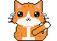
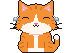
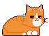
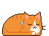
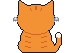

Nini wanders along your taskbar, climbs onto your windows, naps when you step away, chases your mouse, and whispers spooky facts. She wears little steel jhumkas. She may knock your windows around a bit.
Download NiniFree. No installer, just double-click and she appears.

She hops onto title bars, peers over the edge, and sometimes bats a window aside (she puts it back).

Every so often she sits down and tells you something creepy. Extra spooky on Fridays and the 13th.

Grooming, kneading, loafing, slow blinks, stretches, zoomies at 3 AM, and a yarn ball.

Step away from your computer and she curls up next to your cursor until you're back.

She remembers you. Pet her and feed her treats, or she'll turn her back on you for a while.
Tiny bell earrings that swing as she walks. Very fashionable cat.
Click here or use the orange button above.
If Windows shows “Windows protected your PC”, click More info → Run anyway. That warning appears for apps that aren't signed with a paid certificate.
Click her to pet her, drag her around, or right-click her for treats, games and naps.
Hover over Nini and click the little × that appears near her head. She'll wave goodbye and run off your screen.